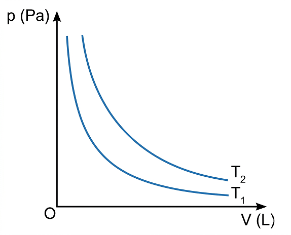
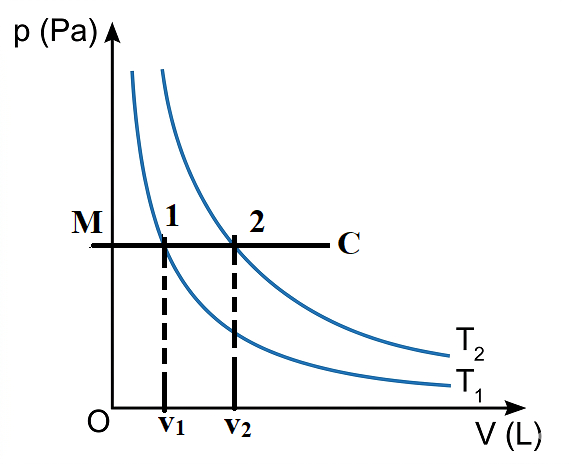

Để giải các bài tập về sự chuyển trạng thái của khí lí tưởng thì cần dùng những công thức nào? Nêu rõ ý nghĩa và cách dùng của từng công thức.
I. MỘT SỐ LƯU Ý TRONG VIỆC GIẢI BÀI TẬP VỀ KHÍ LÍ TƯỞNG
Phần khí lí tưởng bao gồm bốn nội dung chính: Mô hình động học phân tử chất khí, phương trình trạng thái của khí lí tưởng, áp suất khí theo mô hình động học phân tử và động năng phân tử.
1. Lưu ý khi giải bài tập định tính
Các bài tập này thường yêu cầu vận dụng mô hình khí lí tưởng và mối quan hệ giữa các thông số trạng thái \( (p, V, T) \) để giải thích các hiện tượng, ứng dụng thực tế có liên quan. Khi giải cần lưu ý đến điều kiện về khối lượng khí xác định.
2. Lưu ý khi giải bài tập định lượng
Các bài tập định lượng chủ yếu là về sự chuyển trạng thái. Việc giải thường tiến hành theo 3 bước:
- Xác định lượng khí có thay đổi hay không (khối lượng, số mol).
- Xác định trạng thái đầu, trạng thái cuối và quá trình chuyển trạng thái.
- Xác định các thông số đặc trưng (\( V, p, T, m \)) trong từng trạng thái.
3. Lưu ý khi giải bài tập thí nghiệm
Tập trung vào yêu cầu xử lí số liệu, biểu diễn bằng đồ thị mối quan hệ giữa \( p, V, T \) trong các hệ trục tọa độ khác nhau để rút ra kết luận.
II. BÀI TẬP VÍ DỤ
Ví dụ 1:
Một bình hình trụ dung tích 8 lít, đặt thẳng đứng, đậy kín bằng một nắp khối lượng 2 kg, đường kính 20 cm. Khí ở \( 100^\circ C \) và áp suất \( 10^5 \text{ Pa} \). Khi nhiệt độ giảm còn \( 20^\circ C \):
a) Áp suất khí trong bình bằng bao nhiêu?
b) Muốn mở nắp bình cần một lực tối thiểu bằng bao nhiêu? Lấy \( g = 9,8 \text{ m/s}^2 \).
Giải:
a) Quá trình đẳng tích (\( V_1 = V_2 = 8 \text{ L} \)):
Trạng thái 1: \( T_1 = 373 \text{ K}, p_1 = 10^5 \text{ Pa} \)
Trạng thái 2: \( T_2 = 293 \text{ K}, p_2 = ? \)
Công thức: \( \frac{p_1}{T_1} = \frac{p_2}{T_2} \Rightarrow p_2 = \frac{p_1 \cdot T_2}{T_1} = \frac{10^5 \cdot 293}{373} \approx 7,86 \cdot 10^4 \text{ Pa} \).
b) Điều kiện mở nắp: \( F + p_2 S = mg + p_1 S \)
Với \( S = \frac{\pi d^2}{4} \approx 0,0314 \text{ m}^2 \). Tính được \( F = (p_1 - p_2)S + mg = (10^5 - 7,86 \cdot 10^4) \cdot 0,0314 + 2 \cdot 9,8 \approx 692 \text{ N} \).
Ví dụ 2:
So sánh nhiệt độ \( T_1 \) và \( T_2 \) từ đồ thị đường đẳng nhiệt trong hệ tọa độ \( (p, V) \).


Giải: Kẻ một đường đẳng áp song song với trục \( OV \). Đường này cắt hai đồ thị tại \( V_1 \) và \( V_2 \). Từ đồ thị thấy \( V_1 < V_2 \). Với cùng áp suất, thể tích tỉ lệ thuận với nhiệt độ tuyệt đối nên \( T_1 < T_2 \).
Ví dụ 3:
Một bình kín chứa \( m = 1,00 \text{ kg} \) khí ở \( p_1 = 10^7 \text{ Pa} \). Lấy khí ra đến khi áp suất còn \( p_2 = 2,5 \cdot 10^6 \text{ Pa} \). Tính khối lượng khí đã lấy ra (nhiệt độ không đổi).
Giải: Sử dụng phương trình Clapeyron-Mendeleev:
\( p_1 V = \frac{m_1}{M}RT \) (1)
\( p_2 V = \frac{m_2}{M}RT \) (2)
Lập tỉ số (1)/(2): \( \frac{p_1}{p_2} = \frac{m_1}{m_2} \Rightarrow m_2 = m_1 \cdot \frac{p_2}{p_1} = 1 \cdot \frac{2,5 \cdot 10^6}{10^7} = 0,25 \text{ kg} \).
Khối lượng lấy ra: \( \Delta m = m_1 - m_2 = 1,00 - 0,25 = 0,75 \text{ kg} \).
III. BÀI TẬP VẬN DỤNG
Bài 1:
Một lượng khí ở điều kiện tiêu chuẩn (ĐKTC) có thể tích \( 2 \text{ m}^3 \). Nếu nén đẳng nhiệt lượng khí này tới áp suất \( 5 \cdot 10^5 \text{ Pa} \) thì thể tích của lượng khí sẽ là bao nhiêu?
Giải:
Áp dụng định luật Boyle cho quá trình đẳng nhiệt:
Trạng thái 1 (ĐKTC): \( p_1 = 1,013 \cdot 10^5 \text{ Pa} \), \( V_1 = 2 \text{ m}^3 \).
Trạng thái 2: \( p_2 = 5 \cdot 10^5 \text{ Pa} \), \( V_2 = ? \)
\( p_1 V_1 = p_2 V_2 \Rightarrow V_2 = \frac{p_1 V_1}{p_2} = \frac{1,013 \cdot 10^5 \cdot 2}{5 \cdot 10^5} \approx 0,405 \text{ m}^3 \).
Bài 2 (Câu hỏi về Bóng thám không):
a) Tại sao vỏ bóng phải được làm bằng chất liệu đàn hồi?
b) Tại sao để bóng bay lên, người ta phải bơm vào bóng một loại khí có khối lượng riêng nhỏ hơn không khí?
c) Bóng thám không thường chỉ bay lên tới độ cao khoảng từ 30 km đến 40 km là bị vỡ. Tại sao bóng bị vỡ?
- a) Vỏ bóng làm bằng chất liệu đàn hồi để nó có thể giãn nở khi áp suất khí quyển bên ngoài giảm dần theo độ cao, giúp cân bằng áp suất bên trong và bên ngoài mà không làm nổ bóng ngay lập tức.
- b) Theo lực đẩy Archimedes, để vật bay lên được trong không khí thì trọng lượng của nó phải nhỏ hơn lực đẩy Archimedes của không khí tác dụng lên nó. Khí có khối lượng riêng nhỏ (như Hydrogen hay Helium) giúp tổng khối lượng bóng nhỏ hơn khối lượng không khí bị chiếm chỗ.
- c) Càng lên cao, áp suất khí quyển càng giảm. Hiệu áp suất giữa bên trong và bên ngoài tăng làm khí giãn nở, kéo căng vỏ bóng. Đến độ cao 30-40 km, độ giãn nở vượt quá giới hạn đàn hồi của vật liệu khiến bóng bị vỡ.
Bài 3:
Một bình dung tích \( 40 \text{ dm}^3 \) chứa \( 3,96 \text{ kg} \) khí oxygen. Hỏi ở nhiệt độ nào thì bình có thể bị vỡ, biết bình chỉ chịu được áp suất không quá \( 60 \text{ atm} \). Lấy khối lượng riêng của oxygen ở ĐKTC là \( 1,43 \text{ kg/m}^3 \).
Giải:
Khối lượng mol của Oxygen \( O_2 \) là \( M = 32 \text{ g/mol} = 0,032 \text{ kg/mol} \).
Dùng phương trình Clapeyron-Mendeleev: \( pV = \frac{m}{M}RT \)
Với \( p = 60 \text{ atm} \approx 60 \cdot 1,013 \cdot 10^5 \text{ Pa} \), \( V = 40 \text{ dm}^3 = 0,04 \text{ m}^3 \), \( m = 3,96 \text{ kg} \).
\( T = \frac{pVM}{mR} = \frac{(60 \cdot 1,013 \cdot 10^5) \cdot 0,04 \cdot 0,032}{3,96 \cdot 8,31} \approx 236 \text{ K} \).
Nhiệt độ tương ứng: \( t \approx 236 - 273 = -37^\circ C \).
Bài 4:
Một bình chứa khí được nén ở nhiệt độ \( 27^\circ C \) và áp suất \( 40 \text{ atm} \). Nếu nhiệt độ giảm xuống còn \( 12^\circ C \) và một nửa lượng khí thoát ra khỏi bình thì áp suất khí sẽ bằng bao nhiêu?
Giải:
Trạng thái 1: \( p_1 = 40 \text{ atm} \), \( T_1 = 300 \text{ K} \), số mol \( n_1 \).
Trạng thái 2: \( p_2 = ? \), \( T_2 = 285 \text{ K} \), số mol \( n_2 = 0,5 n_1 \).
Vì thể tích bình \( V \) không đổi: \( \frac{p_1}{n_1 T_1} = \frac{p_2}{n_2 T_2} \)
\( \Rightarrow p_2 = p_1 \cdot \frac{n_2}{n_1} \cdot \frac{T_2}{T_1} = 40 \cdot 0,5 \cdot \frac{285}{300} = 19 \text{ atm} \).
Bài 5:
Vẽ đường biểu diễn bốn quá trình chuyển trạng thái của một lượng khí xác định. Hãy xác định tên của các quá trình này và nêu quy luật biến đổi của các thông số trạng thái trong từng quá trình.
Phân tích:
- Dựa vào trục tọa độ (ví dụ p-V, V-T, hay p-T) để nhận diện đường thẳng hay đường cong.
- Đường thẳng đi qua gốc tọa độ trong hệ (V,T) là đẳng áp; trong hệ (p,T) là đẳng tích.
- Đường Hyperbol trong hệ (p,V) là đẳng nhiệt.
- Nêu rõ thông số nào không đổi, hai thông số còn lại tỉ lệ thuận hay nghịch với nhau.
EM ĐÃ HỌC
Cách giải các bài tập về khí lí tưởng (định tính, định lượng, thí nghiệm) dựa trên các định luật Boyle, Charles và phương trình trạng thái.
EM CÓ THỂ
Vận dụng được các phương trình trạng thái của khí lí tưởng để giải các bài tập và giải thích hiện tượng đời sống như bóng thám không, lốp xe, bình nén.
TRẮC NGHIỆM CỦNG CỐ
Câu 1. Một lượng khí ở ĐKTC có thể tích \( 2 \text{ m}^3 \). Nếu nén đẳng nhiệt tới áp suất \( 5 \cdot 10^5 \text{ Pa} \) thì thể tích là:
Câu 2. Trong quá trình đẳng tích của một khối lượng khí xác định, khi nhiệt độ tuyệt đối tăng gấp đôi thì áp suất sẽ:
Câu 3. Đơn vị nào sau đây KHÔNG phải là đơn vị của áp suất?
Câu 4. Phương trình trạng thái khí lí tưởng là:
Câu 5. Một bình dung tích không đổi chứa khí ở \( 27^\circ C \). Để áp suất tăng gấp 2 lần thì cần đun nóng khí đến: